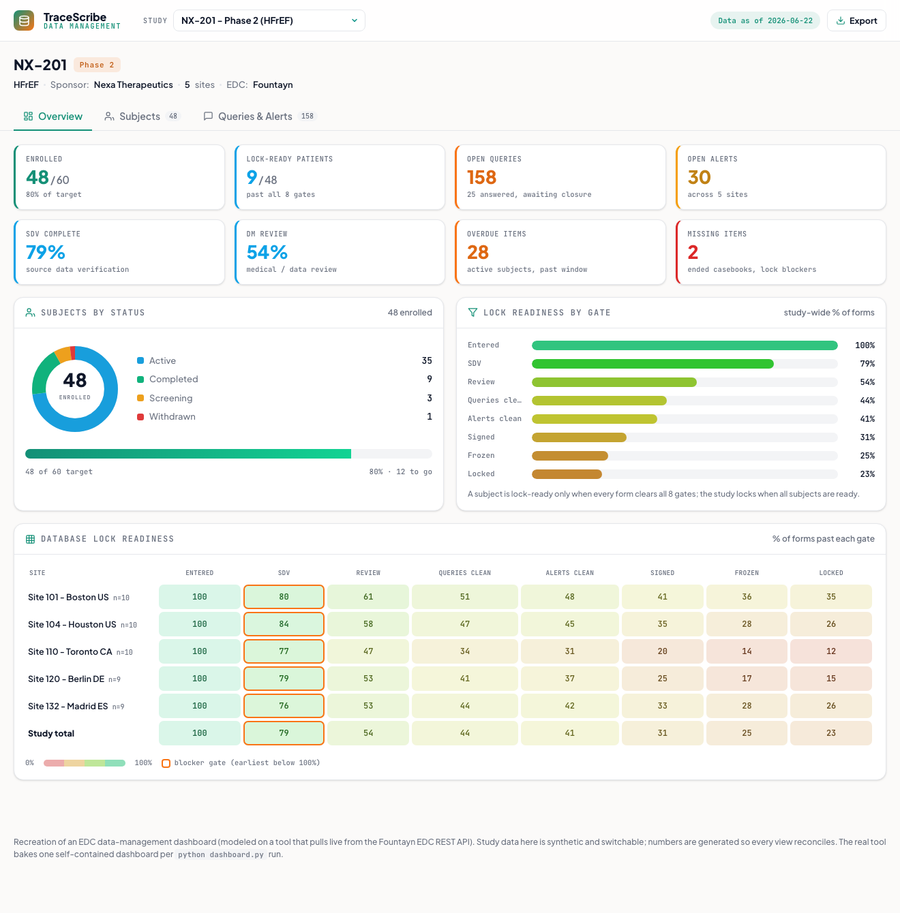

Data Management Dashboard
An EDC data-management command center: enrollment, source-data verification, query and alert resolution, and per-site database-lock readiness across a study. Modeled on a tool that pulls live from the Fountayn EDC API, generalized here so you can switch between studies.
What it does
Gives data managers one view of study health and database-lock readiness from the EDC export: who is enrolled, how clean the data is, what is blocking lock, and where the open queries sit. The real tool bakes a self-contained dashboard on every run; this demo recreates it with switchable, synthetic studies so it is not tied to one protocol.
How it works
- Switch between studies (a Phase 1, a Phase 2, and a Phase 3, across different sponsors) from the header, and every KPI, table, and chart re-renders for that study.
- The Overview is a DM command center: enrollment vs target, lock-ready patients, open queries and alerts, SDV and review progress, and overdue vs missing items.
- The database-lock readiness heatmap shows, per site, the percentage of forms past each of 8 gates (Entered, SDV, Review, Queries clean, Alerts clean, Signed, Frozen, Locked), with the earliest incomplete gate flagged as the blocker.
- Subjects lists every participant with status, SDV/review, open items, and lock-ready percent; Queries & Alerts adds aging buckets, by-site rollups, and an open-query worklist.
- Every figure is generated so the views reconcile: status counts sum to enrollment, query aging sums to the open total, and gates only ever decrease across the lock track.
The production tool pulls live from the Fountayn EDC REST API (initiate, poll, download) and is built for one study; this demo is a self-contained, generalized recreation with synthetic data and no live API.

Static preview - click to open the live, interactive demo